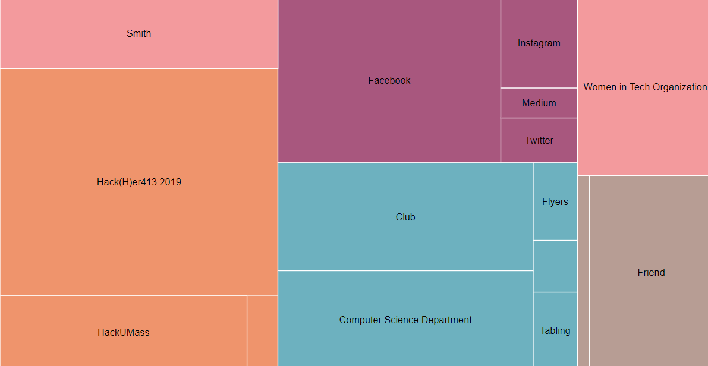
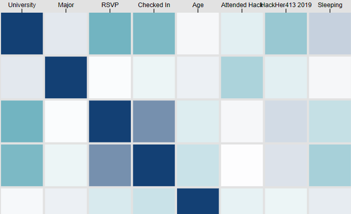
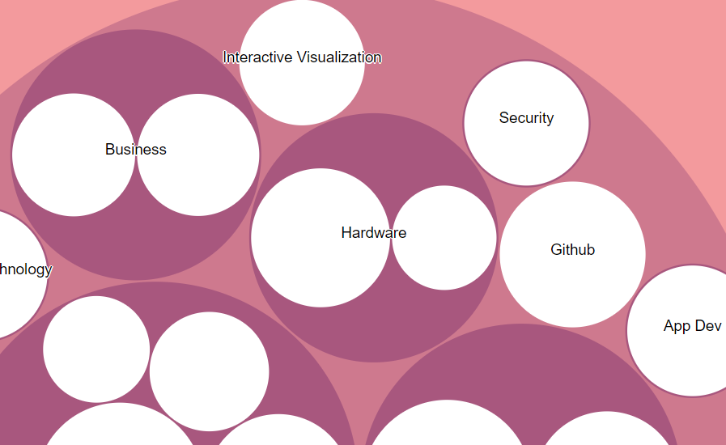

Marketing
-

This visualization demonstrates how Hack(H)er413 attendees found about the event itself. The size of the box demonstrates how many attendees found out. Marketing tools that were used are Social Media, Word of Mouth, Clubs, Physical Marketing, etc. Click on the image to see the visualization.
General Correlations
-

The purpose of this visualization to see how different factors are intertwined. For example, how likely if someone RSVP's to whether they check in or if they are planning on sleeping at the event to whether they check in. We wanted to see how variables interact. Click on the image to see the visualization.
Workshops
-

The purpose of this visualization is to visualize workshop suggestions participants have and how popular each suggestion is and how they relate to each other. Click on the image to see the visualization.
Map
This visualization demonstrates how Hack(H)er413 attendees found about the event itself. The size of the box demonstrates how many attendees found out. Marketing tools that were used are Social Media, Word of Mouth, Clubs, Physical Marketing, etc. Click on the image to see the visualization.